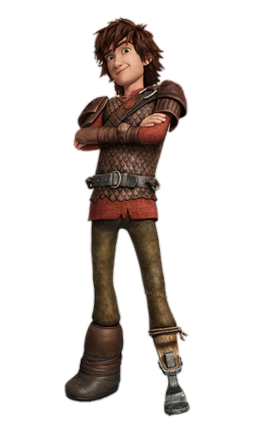

Realistyczny model 3D Czkawki z serialu "Jeźdźcy smoków". Projekt został wyrzeźbiony od podstaw w programie Blender. Poniżej znajduje się interaktywny podgląd wyeksportowanego modelu w formacie GLB.
A realistic 3D model of Hiccup from the "DreamWorks Dragons" series. The project was sculpted from scratch in Blender. Below is an interactive preview of the exported model in GLB format.
Zdjęcie referencyjne: Reference image:
